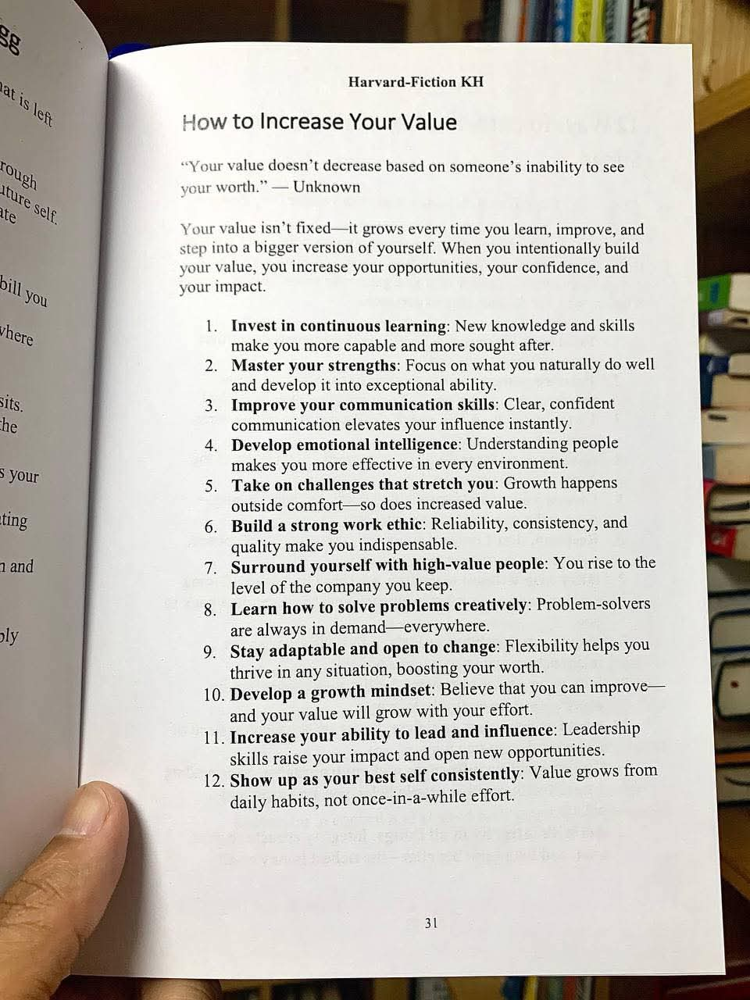

Kabut tipis masih menggantung di atas jalanan daerah Dago Atas, Bandung. Udara pagi yang sejuk menelusup masuk melalui celah jendela kafe bergaya kolonial yang telah direnovasi menjadi ruang kerja bersama kelas atas. Di sudut ruangan yang dihiasi lampu temaram berwarna hangat dan panel kayu mahoni, empat orang profesional muda duduk mengelilingi meja bundar besar. Di atas meja tersebut berserakan laptop, cetak biru tata letak pabrik, tablet yang menampilkan grafik analisis data, dan empat cangkir kopi arabika yang uapnya perlahan menghilang.
Mereka adalah punggawa dari Nexus Cendekia, sebuah firma konsultasi manajemen operasi dan rantai pasok yang didirikan oleh empat alumni Teknik Industri dari sebuah institut teknologi ternama di Bandung. Dalam tiga tahun terakhir, mereka telah menangani berbagai portofolio klien, mulai dari perusahaan rintisan logistik hingga manufaktur skala menengah. Namun, proyek yang sedang mereka hadapi saat ini terasa seperti tembok beton yang sulit ditembus.
Raka, pria dengan kacamata berbingkai tipis dan kemeja rapi yang digulung hingga siku, mengusap wajahnya dengan kasar. Di layar laptopnya terpampang model simulasi linear programming yang sangat rumit. Angka-angka optimasi menunjukkan bahwa efisiensi gudang klien mereka, sebuah perusahaan tekstil raksasa di Majalaya, bisa meningkat hingga tiga puluh lima persen. Secara matematis, model itu sempurna. Tidak ada cacat. Variabel kendala telah dimasukkan, fungsi tujuan telah dimaksimalkan.
"Aku tidak mengerti," gumam Raka, nada suaranya dipenuhi frustrasi analitis. "Sistem routing ini sudah mempertimbangkan jarak tempuh paling minimal untuk forklift. Penempatan barang fast-moving sudah berada di dekat pintu keluar. Secara teoritis, waktu siklus pengambilan barang seharusnya turun dari lima belas menit menjadi delapan menit. Tapi laporan dari supervisor lapangan kemarin? Waktu siklus malah naik menjadi dua puluh menit, dan tingkat kesalahan pengambilan barang melonjak tajam."
Di seberang Raka, duduk Nisa. Ia adalah satu-satunya wanita di tim tersebut, mengenakan blazer berwarna biru tua yang elegan namun tetap profesional. Nisa memiliki reputasi sebagai sosok yang tenang, empatik, namun memiliki ketajaman analisis sistem yang luar biasa. Jika Raka adalah otak kiri dari firma mereka, Nisa adalah otak kanan yang menyeimbangkan segalanya dengan pemahaman mendalam tentang faktor manusia dalam sistem industri.
Nisa menutup catatan kecilnya dan menatap Raka dengan tatapan lembut namun tegas. "Raka, model matematikamu memang tidak memiliki celah. Persamaannya elegan. Tetapi, kamu lupa satu variabel yang tidak bisa dikuantifikasi dengan mudah dalam perangkat lunak LINGO atau simulasi Arena. Kamu lupa bahwa yang mengendarai forklift itu adalah Pak Yono dan timnya, manusia yang sudah bekerja dengan cara yang sama selama dua puluh tahun. Perubahan mendadak tanpa komunikasi yang tepat adalah resep utama untuk sebuah resistensi."
Dimas, yang duduk di sebelah Nisa, mengangguk setuju sambil memutar-mutar pena stylus di tangannya. Dimas adalah spesialis adopsi teknologi. Ia selalu haus akan pengetahuan baru, menguasai berbagai bahasa pemrograman dan perangkat lunak terbaru. "Nisa benar. Kemarin aku melihat langsung ke lapangan. Sistem antarmuka di tablet yang kita berikan kepada operator gudang mungkin terlihat intuitif bagi kita yang terbiasa dengan aplikasi modern. Tapi bagi mereka yang tangannya terbiasa dengan kertas karbon dan pulpen, layar sentuh dengan banyak tombol dropdown itu sangat mengintimidasi."
"Lalu apa yang harus kita lakukan?" tanya Bima, sang pemimpin proyek sekaligus direktur utama Nexus Cendekia. Bima memiliki karisma alami, suara yang bariton, dan kemampuan negosiasi tingkat tinggi. "Kita memiliki tenggat waktu dua minggu lagi untuk presentasi akhir di hadapan dewan direksi perusahaan tekstil tersebut. Jika implementasi di lapangan gagal, nilai kontrak kita tidak akan dibayarkan penuh, dan lebih buruk lagi, reputasi yang telah kita bangun susah payah di Bandung ini akan hancur."
Suasana meja menjadi hening. Suara ketukan sendok pada cangkir kopi dari meja sebelah terdengar jelas. Raka kembali menatap layar laptopnya dengan tatapan kosong, merasa bahwa semua kecerdasannya dalam memformulasikan algoritma tidak ada harganya di hadapan masalah ini.
Nisa kemudian merogoh tas kerjanya dan mengeluarkan sebuah buku bacaan. Ia membuka sebuah halaman yang telah ia tandai dan meletakkannya di tengah meja, tepat di atas tumpukan cetak biru.

"Aku membaca ini semalam," kata Nisa perlahan, memastikan semua mata tertuju pada halaman buku tersebut. "Judulnya adalah tentang bagaimana meningkatkan nilai diri kita. Dan aku rasa, masalah yang kita hadapi sekarang bukan lagi tentang nilai efisiensi pabrik, melainkan tentang nilai kita sebagai konsultan, sebagai penyelesai masalah."
Bima mencondongkan tubuhnya, membaca kutipan di bagian atas halaman. "Nilai Anda tidak menurun berdasarkan ketidakmampuan seseorang untuk melihat harga diri Anda. Nilai Anda tidak tetap, ia tumbuh setiap kali Anda belajar, berkembang, dan melangkah menjadi versi diri Anda yang lebih besar."
Nisa tersenyum. "Tepat. Mari kita bedah kegagalan implementasi kita berdasarkan poin-poin ini. Kita semua cerdas secara akademis, lulusan teknik industri dengan IPK tinggi. Tapi kecerdasan teknis saja tidak cukup untuk membawa perubahan nyata. Kita harus membangun nilai kita secara intensional untuk meningkatkan dampak kita."
Raka membaca poin pertama dan kedua. "Investasi dalam pembelajaran berkelanjutan, dan kuasai kekuatanmu." Ia menghela napas. "Kekuatanku adalah optimasi. Aku sudah menguasainya. Tapi apa yang harus aku pelajari lagi?"
"Raka," Nisa berbicara dengan nada yang menenangkan, "Kekuatanmu memang di optimasi. Fokuslah pada apa yang kamu lakukan dengan baik. Tapi lihat poin keempat: Kembangkan kecerdasan emosional. Memahami orang membuatmu lebih efektif di setiap lingkungan. Algoritma optimasi yang hebat tidak akan memiliki nilai jika tidak bisa diterima oleh manusia yang menjalankannya. Kamu perlu belajar memahami ketakutan pekerja lapangan terhadap sistem baru. Itu adalah pembelajaran berkelanjutanmu."
Dimas menyela, matanya terpaku pada poin kedelapan dan kesembilan. "Belajar bagaimana memecahkan masalah secara kreatif, dan tetap dapat beradaptasi serta terbuka terhadap perubahan. Aku rasa ini teguran untukku. Aku memaksakan perangkat lunak tercanggih tanpa memikirkan adaptasi mereka. Seharusnya aku mendesain antarmuka yang menyerupai formulir kertas lama mereka agar transisinya lebih mulus. Aku harus lebih fleksibel, bukan memaksakan standar industri 4.0 secara buta pada ekosistem yang belum siap."
"Dan ini bagianku," Bima menunjuk pada poin kesebelas. "Tingkatkan kemampuan Anda untuk memimpin dan memengaruhi. Keterampilan kepemimpinan meningkatkan dampak Anda dan membuka peluang baru. Sebagai pemimpin proyek, aku terlalu sibuk mengurus negosiasi di ruang rapat ber-AC. Aku gagal memimpin komunikasi di lantai pabrik. Aku berasumsi bahwa surat perintah dari direktur sudah cukup untuk membuat pekerja patuh. Aku melupakan seni memengaruhi hati para pekerja."
Nisa mengambil kembali bukunya. "Lalu lihat poin kelima: Ambil tantangan yang meregangkan diri Anda. Pertumbuhan terjadi di luar zona nyaman, begitu juga peningkatan nilai. Bagi Raka, zona nyamannya adalah di depan kode pemrograman. Bagi Dimas, di eksplorasi perangkat lunak baru. Bagi Bima, di presentasi tingkat tinggi. Keluar dari zona nyaman berarti kita harus turun ke lapangan, berdiri di tengah debu kain dan bisingnya mesin, dan berbicara dari hati ke hati dengan para operator."
Bima menggebrak meja dengan perlahan, matanya memancarkan tekad baru. "Baik. Kita rombak pendekatan kita. Kita terapkan poin kedua belas: Tampil sebagai diri terbaik Anda secara konsisten. Nilai tumbuh dari kebiasaan sehari-hari, bukan upaya sesekali. Mulai hari ini, kita tidak hanya menjadi konsultan di belakang meja. Kita menjadi mitra bagi pekerja lapangan."
Keesokan harinya, dinamika kerja Nexus Cendekia berubah drastis. Mereka tidak lagi menghabiskan waktu di kafe Dago. Sebaliknya, mereka meluncur menuju Majalaya sejak pukul enam pagi, menembus kemacetan lalu lintas kawasan industri. Udara di dalam pabrik terasa pengap, dipenuhi aroma serat kapas dan pelumas mesin. Suara mesin tenun dan hilir mudik forklift menciptakan simfoni industri yang memekakkan telinga.
Sesuai dengan resolusi mereka, Nisa mengambil peran utama dalam menerapkan poin ketiga: Tingkatkan keterampilan komunikasi Anda. Ia mendekati Pak Yono, kepala regu gudang yang sebelumnya paling keras menentang sistem baru. Nisa tidak membawa tablet atau kurva produktivitas. Ia membawa dua gelas teh manis hangat dari kantin pabrik dan duduk di sebelah Pak Yono saat jam istirahat.
Dengan komunikasi yang jelas dan percaya diri, namun sarat empati, Nisa mulai bertanya, bukan menggurui. Ia mendengarkan keluh kesah Pak Yono tentang bagaimana tata letak baru membuat timnya kebingungan karena penempatan barang tidak lagi berdasarkan intuisi bertahun-tahun, melainkan sistem koordinat yang asing. Nisa mendengarkan dengan seksama, mengaplikasikan kecerdasan emosionalnya untuk memahami rasa frustrasi para pekerja senior yang merasa kompetensinya diremehkan oleh sistem komputer.
Sementara itu, Dimas duduk bersama staf administrasi gudang. Ia menerapkan poin kesembilan: Tetap dapat beradaptasi dan terbuka terhadap perubahan. Alih-alih memaksa mereka menggunakan aplikasi yang ia buat, Dimas mengamati cara mereka mencatat secara manual. Ia menyadari bahwa desain antarmukanya terlalu padat. Dalam semalam, Dimas merombak aplikasinya. Ia menyederhanakan tampilan, memperbesar ukuran tombol, dan menggunakan istilah-istilah lokal pabrik alih-alih istilah rantai pasok bahasa Inggris. Ia memecahkan masalah secara kreatif (poin kedelapan), menjadikan teknologi sebagai alat bantu, bukan ancaman.
Raka, yang biasanya benci kebisingan, memaksakan dirinya berada di luar zona nyaman (poin kelima). Ia berjalan mengikuti rute forklift berulang-ulang dengan membawa stopwatch dan papan jalan. Ia menyadari apa yang hilang dari model matematikanya. Lorong C memiliki permukaan lantai yang sedikit bergelombang, memaksa operator menurunkan kecepatan demi keamanan barang pecah belah. Persamaan linearnya berasumsi semua lantai datar dan kecepatan konstan. Raka tersenyum pahit, menyadari kesombongan intelektualnya. Ia kembali ke meja sementaranya di pojok pabrik, menyesuaikan variabel kendala dalam modelnya dengan realitas fisik yang ada. Ia sedang mempraktikkan pola pikir berkembang (poin kesepuluh), percaya bahwa modelnya bisa diperbaiki, dan nilai karyanya akan tumbuh seiring usahanya.
Dan Bima, ia menunjukkan etos kerja yang kuat (poin keenam). Keandalan, konsistensi, dan kualitas membuatnya sangat diperlukan. Ia hadir sebelum pergantian shift, memastikan setiap perangkat keras berfungsi, menjembatani komunikasi antara manajemen tingkat atas dan pekerja lapangan. Bima menunjukkan kepemimpinan sejati (poin kesebelas), tidak dengan memberi perintah, tetapi dengan memberikan teladan dan memfasilitasi kebutuhan timnya.
Satu minggu berlalu dengan intensitas yang sangat tinggi. Perubahan perlahan tapi pasti mulai terlihat. Pak Yono mulai tersenyum saat mengarahkan anak buahnya menggunakan tata letak hasil revisi Raka, yang kini telah mengkompromikan efisiensi matematis dengan kearifan lokal lapangan. Para staf administrasi mulai berlomba-lomba memasukkan data ke dalam tablet yang telah disederhanakan oleh Dimas, menemukan bahwa itu sebenarnya mempercepat waktu pulang mereka karena tidak perlu rekapitulasi manual di akhir shift.
Menjelang hari presentasi akhir, keempat sekawan itu kembali berkumpul di kafe di Dago. Wajah mereka terlihat lebih lelah dari sebelumnya, namun ada aura kepuasan dan kepercayaan diri yang berbeda. Mereka telah mengelilingi diri mereka dengan orang-orang bernilai tinggi (poin ketujuh)—bukan dalam artian status sosial, melainkan orang-orang yang saling mendukung, mengkritik secara konstruktif, dan mendorong satu sama lain untuk menjadi lebih baik.
"Laporan performa minggu ini baru saja masuk," lapor Raka, matanya berbinar menatap layar. "Waktu siklus pengambilan barang turun menjadi sembilan menit. Mungkin tidak mencapai target teoritis delapan menit seperti model awalku, tapi tingkat akurasi mencapai sembilan puluh sembilan koma delapan persen. Dan yang terpenting, tidak ada lagi penolakan dari lapangan."
Nisa menyeruput teh camomile-nya dengan elegan. "Karena sekarang sistem itu adalah milik mereka, bukan sekadar perintah dari konsultan kota yang sok tahu. Kita berhasil menerjemahkan angka menjadi bahasa manusia."
Bima menyandarkan punggungnya di kursi, merasakan beban berat akhirnya terangkat dari pundaknya. "Besok kita presentasi. Dan aku yakin, dewan direksi tidak hanya akan melihat angka-angka penghematan biaya. Mereka akan melihat sebuah kelancaran operasional yang belum pernah terjadi sebelumnya. Kita telah meningkatkan nilai kita, teman-teman. Bukan hanya nilai perusahaan kita, tapi nilai intrinsik kita sebagai profesional di bidang teknik industri."
Presentasi keesokan harinya di ruang rapat direksi berjalan gemilang. Bima memaparkan strategi dengan karisma dan kejelasan yang luar biasa. Raka menjelaskan adaptasi modelnya dengan rendah hati, menunjukkan bagaimana realitas lapangan mengubah asumsi akademis. Dimas mendemonstrasikan aplikasi yang ramah pengguna, dan Nisa menjelaskan pendekatan manajemen perubahan yang berpusat pada manusia.
Direktur Utama perusahaan tekstil tersebut, seorang pria paruh baya yang terkenal kritis, mengangguk-angguk puas. "Saya telah menyewa banyak konsultan dari Jakarta bahkan luar negeri. Mereka semua memberi saya laporan tebal dengan grafik yang indah. Tapi jarang ada yang mau turun tangan memastikan tangan yang kotor di pabrik bersedia menjalankan grafik tersebut. Kalian, anak-anak muda dari Bandung ini, kalian memiliki nilai yang berbeda. Kalian membawa solusi yang memiliki jiwa."
Kontrak dibayarkan penuh, ditambah dengan penawaran untuk menangani proyek ekspansi pabrik baru mereka di Jawa Tengah tahun depan. Nexus Cendekia tidak hanya menyelamatkan reputasi mereka, tetapi juga melipatgandakannya.
Beberapa bulan setelah proyek tersebut selesai, suasana di kantor Nexus Cendekia terasa lebih hidup. Mereka sedang mengadakan rapat evaluasi tahunan. Di dinding ruang rapat, sebuah pigura besar kini terpasang rapi.
Di dalam pigura tersebut, bukan sertifikat penghargaan atau grafik keuntungan perusahaan. Melainkan sebuah salinan halaman buku yang dulu dibawa oleh Nisa. Dua belas poin tentang bagaimana meningkatkan nilai diri terpampang jelas, menjadi pedoman dasar bagi setiap langkah yang akan mereka ambil ke depannya.
Raka tidak lagi hanya mengandalkan perhitungan matematis murni; ia kini selalu memulai proyek dengan wawancara mendalam dengan pengguna akhir. Dimas terus belajar teknologi baru, namun selalu dengan lensa aplikabilitas dan ergonomi kognitif. Bima semakin tajam dalam kepemimpinannya, menginspirasi tim internal maupun kliennya. Dan Nisa, ia terus menjadi penyeimbang, memastikan bahwa kecerdasan emosional selalu hadir dalam setiap keputusan teknis yang rasional.
Mereka telah belajar bahwa dalam dunia keteknikan yang keras, yang penuh dengan efisiensi mesin dan minimalisasi biaya, nilai sejati seorang profesional tidak hanya ditentukan oleh gelar akademis atau penguasaan perangkat lunak terkini. Nilai mereka tidak tetap. Ia tumbuh seiring dengan kerendahan hati untuk terus belajar, empati untuk memahami orang lain, keberanian untuk mengambil tantangan, dan konsistensi untuk selalu memberikan yang terbaik. Mereka telah membuktikan bahwa di kota Bandung yang kreatif ini, kecerdasan intelektual yang dipadukan dengan kematangan emosional adalah formula paling optimis untuk sebuah kesuksesan yang berkelanjutan.